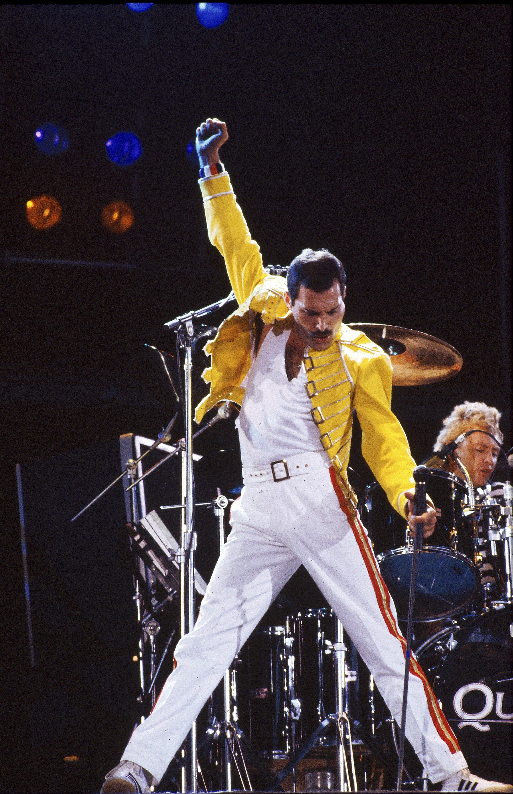

El rock es un género musical que se originó en la década de 1950 en Estados Unidos y Reino Unido. Se caracteriza por:
INTRUMENTACIÓN: Se destaca por el uso predominante de instrumentos como la guitarra eléctrica, el bajo eléctrico, la batería y en muchos casos, el teclado.
RIFF DE GUITARRA: A menudo presenta riffs de guitarra distintivos y memorables que forman la base melódica de muchas canciones.
ÉNFASIS EN LA VOZ: Las letras y la interpretación vocal suelen ser elementos fundamentales en el género, con los cantantes transmitiendo una variedad de emociones a través de sus voces.
ESTRUCTURA MUSICAL: Las canciones de rock suelen tener una estructura clásica basada en versos, estribillos y a menudo incluyen solos instrumentales.
INFLUENCIAS VARIADAS: El rock ha sido influenciado por una amplia gama de estilos musicales, incluyendo el blues, el country, el jazz, entre otros, lo que ha dado lugar a una diversidad de subgéneros.
REBELDIA: Desde su origen, el rock ha sido asociado con una actitud de rebeldía y expresión personal, lo que lo ha convertido en un símbolo de la contracultura y la juventud.
Se originó en la década de 1950 en Estados Unidos y Reino Unido. Se caracteriza por la predominancia de la guitarra eléctrica, el bajo y la batería, así como por la influencia de otros géneros musicales como el blues, el country y el jazz. El rock a menudo presenta estructuras de canciones basadas en versos y estribillos, con letras que abordan temas emocionales, sociales o políticos.
A lo largo de los años, el rock ha dado lugar a una amplia variedad de subgéneros, incluyendo el rock and roll, rock clásico, rock alternativo, rock progresivo, heavy metal, punk, entre otros. Cada subgénero tiene su propio sonido distintivo y ha influido en la cultura popular de diferentes maneras.

Freddie Mercury fue un cantante, compositor y músico británico, mejor conocido como el vocalista principal y líder de la legendaria banda de rock Queen. Nacido como Farrokh Bulsara en Zanzíbar en 1946, Mercury es reconocido por su extraordinario rango vocal, carismática presencia en el escenario y composiciones musicales memorables.
Su canción más famosa es "Bohemian Rhapsody"